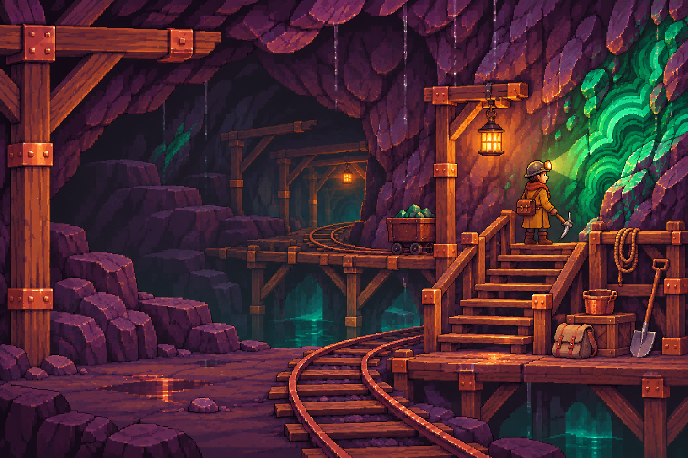

Stridekeep playtest wiki
Start in Copper Stair, find a mineral and decide what to keep. Play as a miner of the Copper Guild with browser-local progress and a simulated crew.
Your first find
Choose a mine and seam, then select Mine seam. You get a raw specimen immediately. Each seam lists its possible finds and the time before you can strike again.
- Purity goes from 0% to 100%, with two decimal places. It affects the specimen's contrast and sale price. A very pure uncommon find can sell for more than a low-purity rare one.
- Weight is separate. Raw pieces weighing at least 22 g yield two pigment units when crushed. Lighter pieces yield one.
- Polish reveals the collectible artwork and keeps the same weight and purity. You can display or sell a polished piece. Crush a raw piece to make pigment, or sell it for coins.
The Field journal keeps your best purity and heaviest find for each discovered mineral. These records can come from different specimens.
Unlock deeper seams
Claim coin rewards from Missions and use the proceeds from sales or Guild Contracts to buy pickaxes. Copper-Bound opens the Reinforced Vein. The Fine-Tip Pick can improve purity at delicate Copper Stair seams. Forged-Iron opens the Iron Fault and Violet Galleries, where you can look for Kunzite and Fluor-liddicoatite.
Guild contracts each pay once. Deliver a heavy raw Calcite from White Face, show a polished Malachite of at least 76% purity and keep it, or give up pigments for the Banner Order and Violet Commission. Mintwash can go to the Banner Order or to Copperwing. You'll need a second mix to do both.
Guild Expedition
After your first personal find, join Silver Fault Survey. Wait for Mara and Ivo, then depart. Contribute once at each of the three stages and wait for the crew to finish its part. Claim the Silver specimen and coins at the end. You can keep mining on your own while the crew works.
Mix pigments and paint Copperwing
Crush raw Calcite for Chalk White, Malachite for Malachite Green, Azurite for Azurite Blue, Hematite for Iron Red and Magnetite for Iron Black. Inventory → Pigments shows each color you own and its quantity, including mixed colors. The Pigment recipes panel shows what you need for each mix.
| Recipe | Ingredients | Where to use it in this test |
|---|---|---|
| Mintwash | 2 Chalk White + 1 Malachite Green | Copperwing or Banner Order |
| Slate Shadow | 2 Iron Black + 1 Azurite Blue | Copperwing |
| Wisteria Mist | 2 Lilac + 1 Chalk White | Violet Commission. Get Lilac in Violet Galleries. |
Select an unfinished color on Copperwing and apply one unit to fill a patch. Complete the eight open patches for the final mural mission.
Save and scope
Your progress stays in this browser on this site. Reset playtest clears it. The current build uses local play, simulated crew members and provisional balance. Twitch accounts, live guilds and streamer-authored murals are outside this playtest.